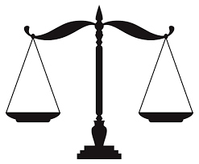
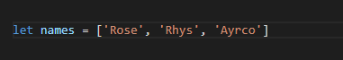
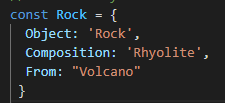

HTML, Its simple,bland and bare, showing the bare bones of coding on a webpage. HTML plants the initial building blocks on your webpage.
CSS, Behind styling is CSS. CSS takes the bare webpage, adds styling and structure to your webpage, leaving you with your desired look.

Both are equally as important as eachother, Creating a stable relationship
Control flow is all about the direction and order in which your code gets executed. Like daily tasks, You can choose the order in which these task are completed.
Loops allow repetitive actions to continue one after another untill a specified point. Loop functions happen when specified, Like tying your shoes amoung other things.
The Dom is a programming interface for web documents, Structured like a tree starting with the document to html and then to the elements.
The Dom represents the html as nodes and objects, Allowing the document to be modifed on the webpage
using JavaScript. Since the html document and javascript are synced, Every change you make using the Dom to manipulate elements from your webpage
saved on both.

Arrays and Objects both store values, they differ from each in the way they store values.
Arrays are great for listing values, such as names, numbers, food etc. Arrays use square brackets to store values.

Objects allow data to be store with the value, giving key information about a peron,animal,price of something or generally anything you want to store.

This allows you to have detailed information about something listed in an order under the same variable.
Functions are a block of code made up of instructions or steps that output an action.
This allows reusable code without having to add more each time you want to repeat the process.
Functions help keep clean code and easy to find by cutting out repeating commands. which helps minimizing bugs, keeps code short and saves alot of time.